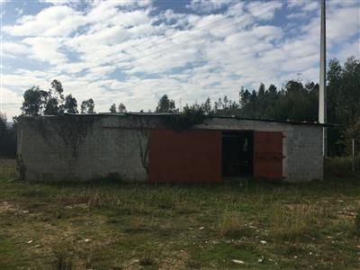

Projetos
Galpões
Atualmente existem três galpões na propriedade. Todos eles necessitam de reformas, sendo que um deles está totalmente comprometido. Foi levantada a possibilidade de iniciar a construção de uma nova estrutura para servir de abrigo para os implementos agrícolas. Este será construído junto à área dedicada à Agrofloresta.
Materiais e Documentos
